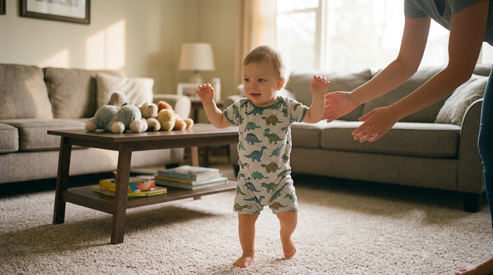
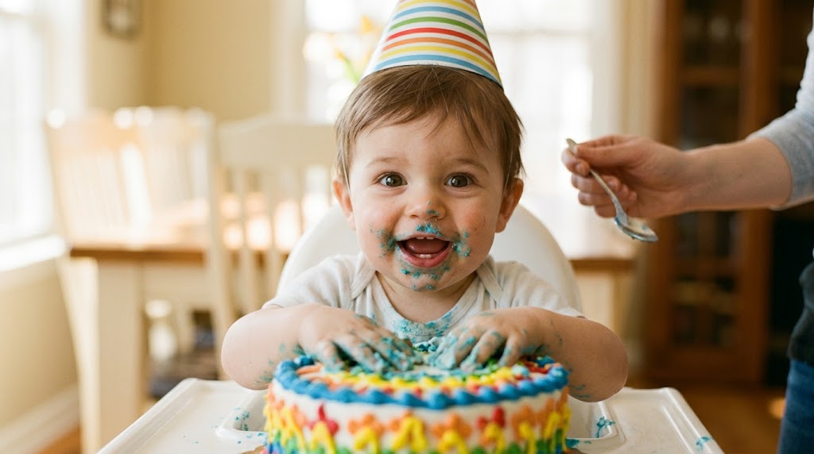

Ya desde entonces tenías esa risa que no se le puede pedir a nadie que ponga.


Nadie sabía a dónde íbamos y salió el mejor fin de semana del año.
Gracias por todo esto
Que este año te traiga más de lo que te gusta y menos de lo que no.
Con cariño, de todos